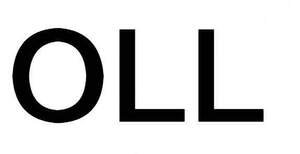

Trade Mark Journal No.2026/010 6 March 2026
UK00004338628 10 February 2026 (9,11)

- Class 9
- Downloadable computer software applications; Computer software (recorded); Downloadable graphics for mobile phones; Computer peripheral devices; Interactive touch screen terminals; Automatic timing switches; Connectors [electricity]; Data processing equipment; Padlocks, electronic; Electric locks; Remote controls for mobile electronic devices; Monitoring apparatus, electric; Electric power supply sockets; Power adapters; Electric switches; Piezoelectric sensors; Electrical controlling devices; Electric control panels; Video display screens; Biometric locks; Battery chargers; Light-emitting diodes [LED].
- Class 11
- Lamps; Light bulbs; Light bulbs, electric; Electric lamps; Lamp casings; Lamp glasses; Discharge tubes, electric, for lighting; Sockets for electric lights; Lighting apparatus and installations; Chandeliers; Safety lamps; Light diffusers; Street lamps; LED lamps; Fluorescent lamp tubes; Fairy lights for festive decoration; Luminous tubes for lighting; Lamp shades; Lampshade holders; Ceiling lights; Miners' lamps; Lanterns for lighting; Electric water heaters; Refrigerating appliances and installations; Fans [air-conditioning]; Ventilation [air-conditioning] installations and apparatus; Air purifying apparatus and machines; Ventilating exhaust fans; Air conditioning installations; Heating apparatus, electric; Heating installations; Heaters for baths; Water purification installations; Pocket warmers; Radiators, electric; Gas lighters; Solar thermal collectors [heating]; Bath fittings; Pocket searchlights; Pocket torches, electric.
OPPLE LIGHTING CO., LTD.
Representative: Sonder & Clay